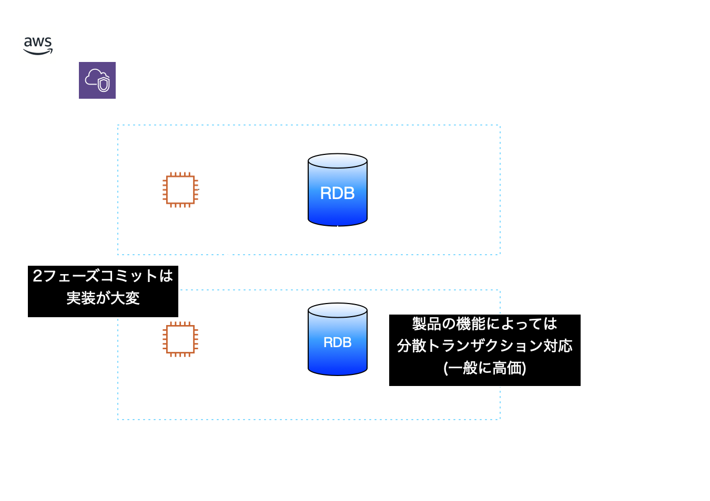
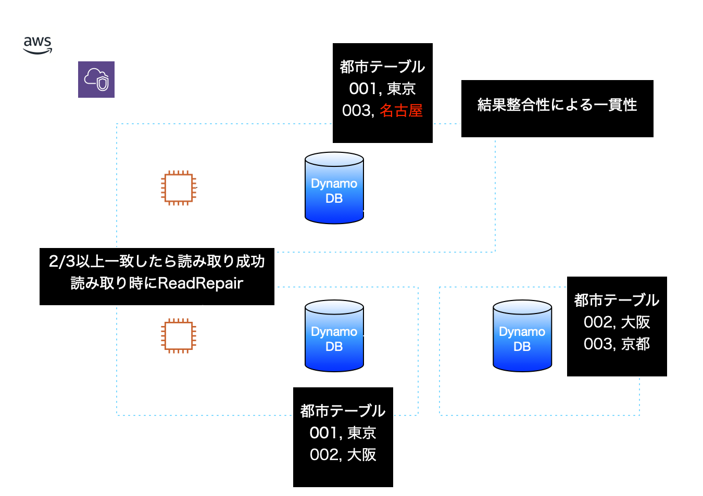
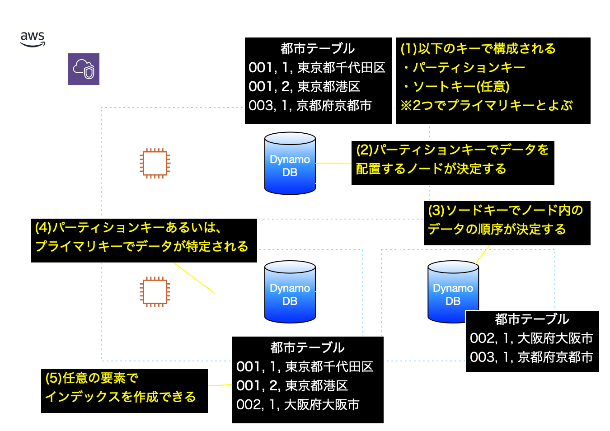

AWSで作ろう！クラウドネイティブ・マイクロサービスアプリケーション
自己紹介

- 名前：川畑 光平
- 所属：デジタル技術部
- 今の仕事
- デジタル技術R&D / プロジェクト支援
- AWS人材育成推進
- 技統本塾「クラウドネイティブ・マイクロサービス」
- AWS Partner Network Ambassadors(Since 2019)
- マイナビ「Tech+」で記事連載中
このスライドの使い方

※当スライドは 「reveal.js」 を使って、GitHub Pages上に作成
アジェンダ
- 何のためのクラウドネイティブ・マイクロサービス？
- どこが違う？クラウドネイティブなデータベースAmazon DynamoDB
- どこが違う？マイクロサービスでの認証・認可で使うAmazon Cognito
- 新しいビジネスをWebサービスとして立ち上げ、ユーザのフィードバックを迅速に取り込みながらWebサービスの向上・拡充を図りたい
- 既存のレガシーなアプリケーションをモダンに作り替えて、機能の一部をサードパーティに公開して新たな収益源としたい
- クラウドにデータを収集し、集約や加工・分析を施して、別のWebサービスとAPI連携させて新たな付加価値を産み出したり、ユーザエクスペリエンスを高めたい
- 素早くビジネスを立ち上げるため、Webサービスを実現するアプリケーションをクラウド環境上に構築する
- 新機能の開発やユーザのフィードバックを迅速に取り込み・反映するため、アプリケーションを細分化して疎結合に構築する
- サービスの利用が増えてきた場合に備えて、利用頻度の高いものをスケール可能にしてビジネス機会を逃さないようにする
- 何らかの理由でサービスを中止する場合も、他に影響なく簡単に破棄できる
- いまだにこの分野の技術は栄枯盛衰が激しく、各プロダクトの機能追加や新たなサービスの登場によってベストプラクティスは変わっていくので、AWSクラウド上での実装例の1つとして捉えていただきたい。
-
AWSのマネージドサービスを可能な限り活用して、できるだけ小さいコストを目指す
(OSSを活用するのはよいが、そのためにEC2立てたり、ライセンス以外のコストも大きい) - 以下の選択肢から最も近い答えを選択ください。
- もちろん！ヘビーユーザーです！
- 軽く触ったことくらいありますよ。
- 名前くらいなら知ってます。
- 発電機用のデータベースですよね分かります
- 左のQRコードをスマホなどで読み取ってください
- スライドを開いている方はこちらのリンクからも回答できます。
- スキーマレステーブル
- パーティションキー、ソートキー、インデックスキーのみを定義する
- 属性は指定しなくても良い
- グローバルセカンダリインデックス
- 検索したい任意の属性をパーティションキー、ソートキーとする
- ローカルセカンダリインデックス
- パーティションキーはそのままに、任意の属性をソートキーとする
- データアクセスユースケースの洗い出し
- [例1]都市テーブルにある都道府県の一覧を取得する
- [例2]郵便番号をもとに都市テーブルにある都道府県を検索する
- [例3]住所テーブルにある都市コードをもとに都市テーブルにある都道府県を検索する
- [例4]都市コードをもとにそこに住む住民の一覧を検索する
- データモデル・関連およびテーブル構成を検討する
- 1:1、1:多の関係をもつデータモデルのテーブル構成はそのまま保存
- 多:多の関係をもつデータモデルのポイント
- 検索のユースケースから、インデックス化する対象を検討
- 検索のユースケースから、アプリケーションで結合する対象を検討
- 最初から完全なデータモデルを作るのは難しい。実装して試行錯誤。
- Sprind Data DynamoDBの利用
- DynamoDBテーブルに対するCRUDメソッドの実装の提供
- キーワードを元にしたクエリメソッドによる動的クエリの生成
- アノテーションベースの簡易なスキーマ表現
- ページネーション、カスタムデータアクセス／データ射影
- Spring Data RestとのRESTサポート
- Sprind Data DynamoDBの利用
- アノテーションを使ったエンティティクラスの実装
- @EnableScanを付与した
CrudRepository継承インターフェースを作成
※DynamoDBTemplateを使ったカスタム実装も可能 - Serviceクラスでデータをアグリゲーション
- スケールアウト型のアーキテクチャで大量のトラフィックを処理することができる。
- クライアント数に応じて段階的に拡張していきやすい。
- クロスリージョンなどグローバルな環境で単一のデータベースを構成できる。
- Spring Dataのコミュニティライブラリも提供されており、設定実装も簡単。
- AWS Lambdaでの利用他、CloudWatchなど他のAWSサービスとも連携できる
- 環境構築が容易(CloudFormationなど基盤自動化で構築)で、データベース自体の運用が容易。
- サードパーティ含めてクライアントが増えた場合、マイクロサービス側が通常の認証処理だとユーザの管理・確認が煩雑になるので、シンプル化のために サードパーティ側の認証・認可の仕組みに基づいて発行したアクセストークンを使って、マイクロサービスのアクセスを制御する。
- JWT形式によるアクセストークンエンコーディングにより、クライアントが増えた場合のスケーラビリティの確保が容易である
- デファクトスタンダードな認可技術の採用により、様々なプロダクトと連携させたり、セキュリティを担保する品質確保や学習・実装コストの低減を図ることができる。
- Spring Security OAuth→Spring Security5へOAuth2.0機能が移植
- OAuth 2.0 Login
- OAuth 2.0 Client
- OAuth 2.0 Resource Server
- 以前のSpring Security OAuthはメンテナンスモードへ
- OAuth 2.0 Authorization Serverはコミュニティプロジェクトへ
- Thymeleafを使用する場合thymeleaf-extras-springsecurity5を追加
- Spring Security 5 OAuthの解説は多田さんのスライドと清水さんのブログが分かりやすい
- OAuth2の解説はTERASOLUNAのガイドラインも参照。
※ただし実装はSpring Security OAuthなので注意 - (1)Spring Boot+Spring Securityで実装したWebAppにアクセス
- (1)'Spring SecurityがCognitoのHostedUIにリダイレクト
- (2)Cognitoユーザプールにサインイン
- (3)認証が成功すると再び、Spring Boot WebAppへリダイレクト
- (3)'リダイレクト時に認可コード(AuthorizationCode)をブラウザに返す
- (3)''リダイレクト先のSpring Boot WebAppへ認可コードを送信
- (4)送信されてきた認可コードをCognitoに送信して検証
- (4)'認可コードが正当なものであれば、IDトークンとアクセストークンを返却
- その後、Spring Boot Appの指定されたページへ遷移
- ユーザプールの構築
- ユーザディレクトリのスキーマ※カスタム属性も可
- パスワードポリシー
- アプリケーションクライアントの設定(WebApp)
- クライアントシークレットを生成
- リダイレクトするコールバックURLを指定
- サインアウトURLを設定
- OAuthフロータイプを認可コードグラントに設定
- OAuthスコープを以下に設定
- openid
- aws.cognito.signin.user.adimin
- profile
- サポートするIDプロバイダをCognitoに設定
- 認証フローを以下に指定
- ADMIN_USER_PASSWORD_AUTH:管理APIユーザー名パスワード認証
- ALLOW_REFRESH_TOKEN_AUTH:リフレッシュトークンベースの認証
- ユーザプールのドメイン(HostedUIのドメイン)
- IDプールの設定
- OIDCプロバイダの設定
- アプリクライアントID
- プロバイダ名(cognito-idp.[region].amazonaws.com/[UserPoolId])
- 認証されたユーザのIAMポリシー
- 認証されたユーザのIAMロール
- 認証されてないユーザのIAMポリシー
- 認証されてないユーザのIAMロール
- IDプールへのIAMロールのアタッチメント
- イントロスペクションエンドポイントがない→トークンが無効化されているかを知るOIDC準拠のエンドポイントがない
- ログアウトエンドポイントがOIDC準拠のものと異なる。→Spring Securityのカスタマイズが必要
- その他、OIDCプロバイダとして足りない機能は、外部プロバイダ(Keycloakなど)と連携する。
- Spring Security設定クラスとして@EnableWebSecurityを付与
- OAuth2 Clientを登録したRepository。詳細は次スライド。
- configureメソッドでoauth2Loginを設定
- ユーザプールのカスタムデータを設定
- カスタムユーザタイプを設定したOAuth2UserServiceをOidcUserServiceに設定する
- カスタムユーザタイプをOAuth2UserServiceに設定する
- Cognitoのカスタムパラメータに応じてロールを割り当てる
- ログアウトエンドポイントのカスタマイズ
- カスタムLogoutSuccessHandlerを設定する
- LogoutSuccessHanlderのpostLogoutRedirectUriを設定する
- ClientRegistrationRepositoryをBean定義
- ClientRegistrationを設定
- ログアウトエンドポイントのURLを作成
- Cognitoで作成されたクライアントIDを設定
- Cognitoで作成されたクライアントシークレットを設定
- スコープは"openid"、"profile"を設定
- Cognitoで設定したリダイレクトURLを設定
- トークンエンドポイントを設定
- 認可エンドポイントを設定
- USERINFOエンドポイントを設定
- Cognitoスキーマで定義したユーザ名(cognito:username)を設定
- 作成したCognitoユーザプールの公開鍵のURLを設定
- クライアント名を設定
- ログアウトエンドポイントを設定したメタデータを設定
- Cognitoのログアウトエンドポイントをカスタマイズするクラス
- OidcClientInitiatedLogoutSuccessHandlerを参考に実装
Finalクラスだったため、オーバーライドできず、URLを差し替える部分だけ変えて後は同じ - 黄色のエリアが修正箇所
- Cognitoから返却されるユーザ情報クラス
- Cognitoのユーザプールスキーマで設定したカスタム属性は「custom:」接頭辞でのJSONパラメータとなるため、明示的にプロパティ名を付与する
- (0)これまでの説明通り、Cognitoを使ってOAuth2 Loginしていることが前提
- (0)'保護対象となるリソースサーバ(マイクロサービス)はAP起動時にCognitoからJWTをでコードするための公開鍵を取得しておく
- (1)ユーザがアプリケーションへアクセス
- (2)バックエンドサービスを呼び出す
- バックエンドを呼び出す際にHTTPヘッダにアクセストークンを付与
- バックエンドサービスはSpring Securityがフィルタでトークンの有効性を検証
- AuthorizationヘッダにBear接頭辞+アクセストークンを設定
- ServletOAuth2AuthorizedClientExchangeFilterFunctionを作成し、WebClientに設定
- baseUrlにALBのドメインを設定しておく
- OAuth2.0 ResourceServer機能を有効化
- JWK-Set-URIに公開鍵のURL(https://cognito-idp.[region].amazonaws.com/[user-pool-id]/.well-known/jwks.json)を設定
- 環境構築が容易(CloudFormation設定だけ)で、すぐに可用性高く使える。
-
ALBとの連携も容易で右の図のような構成も可能。認証後はALBがHTTPヘッダにアクセストークンを付与する
※従来通り、API Gateway + Cognitoの構成でもよい - クライアントシークレットを生成しないモバイルアプリなどは、アクセストークンが奪取されないようPKCEの対応を忘れないようにすること
どんなときに使うべき？
クラウドネイティブ・マイクロサービス
クラウドネイティブ・マイクロサービスの利点
複雑性とのトレードオフ
| アーキテクチャ課題例 | 詳細 |
|---|---|
| サービス実行フロー制御 | 処理のオーケストレーション／コレオグラフィといったサービス実行フロー制御、エラーハンドリング方式 |
| トランザクション管理 | 複数の更新系Backend Serviceを実行する場合の業務トランザクションのロールバックや補償トランザクション |
| ステートフル共有データストア | アプリケーションにスケーラビリティを持たせることを目的に、ステートフル(状態)データを共有するためのデータストアの利用や、データストア障害に伴うフェイルオーバー発生時のエラーハンドリング |
| サービスディスカバリ方式 | マイクロサービスが動的にスケールアウト／縮退する場合のBackend Service APIのサービスディスカバリ |
| サービス間通信方式 | Backend Service APIを呼び出す場合の同期／非同期の使い分け、リトライ／サーキットブレイカー処理 |
複雑性とのトレードオフ
| アーキテクチャ課題例 | 詳細 |
|---|---|
| サービス認証／認可方式 | OIDC、OAuth2.0に準拠した、JWTを使ったアクセストークンの連携方式 |
| ロギング／モニタリング方式 | アプリケーション／サービスを跨いでトレーサビリティを確保するためのロギング、各サービスごとのモニタリング |
| Backend Serviceステートレス化／冪等性 | スケールアウトを容易にする、Backend Serviceのステートレス化を前提としたREST準拠API規約／ルール(HTTPステータスコードなど)、耐障害性向上のための冪等性をもつ処理実装 |
| クラウドマネージドサービス連携 | 揮発性であるコンテナ／サーバレス環境下で、データ永続化のためのマネージドストレージやキューを利用する場合の方式 |
| マルチクライアントにおけるサービス分割 | Webアプリケーション以外にも、モバイルなどのSPAクライアント、サードパーティサービス連携がある場合のサービス分割／ビジネスロジックの分離方針 |
[本日のテーマ]スケーラビリティ確保やサードパーティサービス連携する上で、
有用なAWSサービスの特徴と使い方を紹介
 [注意点]
[注意点]
クラウドネイティブアプリケーションの基本となるAWSサービス(1)
| サービス名 | 詳細 |
|---|---|
| Amazon ECS | アプリケーションがデプロイされたDockerコンテナを実行するコンテナオーケストレーションサービス。コンテナの死活監視やオートスケーリングなどを実行する。詳細は、連載「AWSで作るクラウドネイティブアプリケーションの基本」の第4回を参照のこと。 |
| Amazon EKS | アプリケーションがデプロイされたコンテナを実行する、オープンソースのコンテナオーケストレーションツールKuberntesのマネージドサービス。機能的にはECSと同等。 |
| Amazon DynamoDB★ | スケーラビリティの確保が容易な、単一障害点のないAP型データベース。詳細は、連載「AWSで作るクラウドネイティブアプリケーションの基本」の第15回を参照。 |
| Amazon API Gateway | アプリケーションのAPIゲートウェイとして利用できるサービス。REST APIの定義やデプロイ、サービスへのHTTPリクエスト／レスポンス変換などを実行する。詳細は、連載「AWSで作るクラウドネイティブアプリケーションの基本」の第3回を参照のこと。 |
| AWS Lambda | サーバレスでアプリケーションの実行が可能なサービス。詳細は、連載「AWSで作るクラウドネイティブアプリケーションの基本」の第2回を参照のこと。 |
マイクロサービスアプリケーション構築をサポートするAWSサービス(1)
| サービス名 | 詳細 |
|---|---|
| Elastic Load Balancing | Classic Load Balancer、Application LoadBalancer、Network LoadBalancerで構成されるサービス。ALBでは、各コンテナにデプロイされたマイクロサービスのIP／ポートを意識せずにパスベースでルーティングを行うことができる。詳細は、連載「AWSで作るクラウドネイティブアプリケーションの基本」の第5回を参照のこと。 |
| Route53 | 通常のDNSサービスに加えて、ECS上にデプロイしたマイクロサービスのサービスレジストリ／ディスカバリ機能やオンプレミスや別のデータセンタからのルーティングなどのリゾルバ機能がある。 |
| Amazon ElastiCache | 複数のマイクロサービスアプリケーションのデータ共有のためのキャッシュストレージとして利用できるサービス。詳細は、連載「AWSで作るクラウドネイティブアプリケーションの基本」の第19回を参照。 |
| Amazon SQS | マネージドキューサービス。マイクロサービス間の非同期メッセージ連携などで利用する。詳細は、連載「AWSで作るクラウドネイティブアプリケーションの基本」の第28回を参照のこと。 |
| Amazon SNS | Publish/Subscribe型のメッセージ配信サービス。複数のマイクロサービスへメッセージを連携する場合などで利用する。詳細は、連載「AWSで実践！基盤構築・デプロイ自動化」の第18回を参照のこと。 |
マイクロサービスアプリケーション構築をサポートするAWSサービス(2)
| サービス名 | 詳細 |
|---|---|
| AWS Cognito★ | 認証／認可サービス。外部の認証Providerとの連携や、IAMロールに応じたAWSリソースへのアクセス制御、マルチデバイス間でデータ同期する機能などもある。 |
| Cloud Map | クラウドリソースのDNSサービス。IPアドレスが割り当てられているEC2やRDSなどのAWSリソースに加え、LambdaやDynamoDB、SQSといったARNが割り当てられたリソースに対しても名前解決が可能。 |
| App Mesh | オープンソースのサービスメッシュプロキシEnvoyのマネージドサービス。サービス間の通信、監視、ログやメトリクス出力などを実行できる。 |
| AWS X-Ray | マイクロサービスアプリケーションを分析することができるサービス。サービス実行時間の計測やトレース、フィルタリングによる可視化などが行える。詳細は、連載「AWSで作るマイクロサービス」の第8回を参照のこと。 |
| Amazon MSK (Managed Streaming for Apache Kafka) | オープンソースのメッセージキューミドルウェアであるApache Kafkaのマネージドサービス。非同期メッセージ連携などで利用する。Kafkaではデータの流量制御等きめ細やかな設定が可能 |
| Amazon MQ | マイクロサービス間の非同期メッセージ連携などで利用する。メッセージの到達保証を担保したい場合に利用する |
[アンケート]Amazon DynamoDBをご存知ですか？

質問の結果をみるときは左の青いQRコードを、質問に答えるには右の黒いQRコードを読み取ってください
質問の結果をみるときは左の青いQRコードを、質問に答えるには右の黒いQRコードを読み取ってください
質問の結果をみるときは左の青いQRコードを、質問に答えるには右の黒いQRコードを読み取ってください押さえておく必要がある重要な特徴
| パーティション キー |
ソート キー |
属性1 (都道府県) |
属性2 (市町村区1) |
属性3 (市町村区2) |
|---|---|---|---|---|
| 001 | 1 | 東京都 | 千代田区 | 岩本町 |
| 002 | 1 | 大阪府 | ||
| 003 | 1 | 京都府 | 京都市 | |
| 003 | 2 | 京都府 | 宇治市 |
Resources:
SampleCityTable:
Type: AWS::DynamoDB::Table
Properties:
TableName: CityTable
BillingMode: PROVISIONED
SSESpecification: true
AttributeDefinitions:
- AttributeName: cityId
AttributeType: S
- AttributeName: cityNo
AttributeType: S
- AttributeName: prefectureName
AttributeType: S
KeySchema:
- AttributeName: cityId
KeyType: HASH
- AttributeName: cityNo
KeyType: RANGE
GlobalSecondaryIndexes:
- IndexName: prefectureNameIndex
KeySchema:
- AttributeName: prefectureName
KeyType: HASH
- AttributeName: cityNo
KeyType: RANGE
Projection:
ProjectionType: ALL
ProvisionedThroughput:
ReadCapacityUnits: 5
WriteCapacityUnits: 5
ProvisionedThroughput:
ReadCapacityUnits: 5
WriteCapacityUnits: 5
io.github.boostchicken
spring-data-dynamodb
5.2.1
@Configuration
@EnableDynamoDBRepositories(
basePackages = "org.debugroom.sample.dynamodb.domain.repository"
)
public class DynamoDBConfig {
@Bean
AmazonDynamoDB amazonDynamoDB(){
return AmazonDynamoDBAsyncClientBuilder.standard()
.withEndpointConfiguration(
new AwsClientBuilder.EndpointConfiguration(
DYNAMODB_ENDPOINT,DYNAMODB_REGION))
.build();
}
}
@DynamoDBTable(tableName = "user-table")
public class User implements Serializable {
@Id
@DynamoDBHashKey
private Long userId;
@DynamoDBAttribute
private String firstName;
@DynamoDBAttribute
private String familyName;
@DynamoDBAttribute
private String displayName;
@DynamoDBAttribute
private String imageFilePath;
@DynamoDBAttribute
private Date lastUpdatedAt;
}
@EnableScan
public interface CityRepository extends CrudRepository {
}
@EnableScan
public interface AddressRepository extends CrudRepository {
public List findByCityId(String cityId);
}
@EnableScan
public interface UserRepository extends CrudRepository {
}
@Override
public List getUserslivingCity(String cityId, int index) throws BusinessException {
Optional optionalCity = cityRepository.findById(cityId);
List users = new ArrayList<>();
if(optionalCity.isPresent()){
List userAdressList =
addressRepository.findByCityId(optionalCity.get().getCityId());
for(int i = index ; i <= index + 100 ;i++){
users.add(userRepository.findById(userAddressList.getUserId()).get());
}
}else throw new BusinessException("BE0001",cityId);
return users;
}
その他DynamoDBの機能
| 機能 | 詳細 |
|---|---|
| フィルタリング | クエリやスキャンした結果にフィルタ式として設定し、結果を絞り込む機能 |
| 条件付き書き込み | データの有無や項目値に応じた条件を設定でき、該当したとき更新を行う機能 |
| DynamoDB Transactions | 複数の更新APIを一括して実行する機能。トランザクション内でエラーが発生した場合、全ての更新が無効になる。 |
| TTL(TimeToLive) | データ属性にTTLを設定し、有効期限を過ぎると自動的にテーブルからデータを削除する機能 |
| DAX(DynamoDB Accelator) | マルチアベイラビリティゾーン構成で自動フェイルオーバー機能をもつインメモリキャッシュ |
| DynamoDB Streams | DynamoDBで行われたデータの追加・変更・削除履歴を記録する機能。更新前、更新前後双方オプションとして選択できる。 |
| DynamoDB Trigger | データ更新をイベントとしてLambdaファンクションを実行する機能 |
 まとめ：DynamoDBを使用するメリット
まとめ：DynamoDBを使用するメリット
認証・認可処理の全体像(OIDC/OAuth2)
なぜOAuth2を使用した認可でマイクロサービスを保護するのか？


[AWS Black Belt Online Seminar] Amazon Cognito
Spring SecurityのOAuth2 Support
org.springframework.boot
spring-boot-starter-security
org.springframework.boot
spring-boot-starter-oauth2-client
org.springframework.boot
spring-boot-starter-oauth2-resource-server
org.thymeleaf.extras
thymeleaf-extras-springsecurity5
Spring App + Cognitoで認可コードグラントによるOAuth2 Login
Amazon Cognito構築で必要な設定のポイント(1)
Resources:
SampleUserPool: #(1)
Type: AWS::Cognito::UserPool
Properties:
UserPoolName: sample-microservice-userpool
AliasAttributes:
- email
UsernameConfiguration:
CaseSensitive: false
Schema: #(1-a)
- Name: family_name
AttributeDataType: String
Mutable: true
Required: true
- Name: given_name
AttributeDataType: String
Mutable: true
Required: true
- Name: loginId
AttributeDataType: String
Mutable: false
Required: false
- Name: isAdmin
AttributeDataType: Number
Mutable: true
Required: false
NumberAttributeConstraints:
MinValue: "0"
MaxValue: "2"
Policies:
PasswordPolicy: #(1-b)
MinimumLength: 6
RequireLowercase: true
RequireNumbers: false
RequireSymbols: false
RequireUppercase: false
FrondendWebAppClient: #(2)
Type: AWS::Cognito::UserPoolClient
Properties:
ClientName: sample-microservice-backend-app
GenerateSecret: true #(2-a)
RefreshTokenValidity: 30
UserPoolId : !Ref SampleUserPool
CallbackURLs: #(2-b)
- http://localhost:8080/login/oauth2/code/cognito
LogoutURLs: #(2-c)
- http://localhost:8080
AllowedOAuthFlows: #(2-d)
- code
AllowedOAuthScopes: #(2-e)
- openid
- aws.cognito.signin.user.admin
- profile
AllowedOAuthFlowsUserPoolClient: true
SupportedIdentityProviders: #(2-f)
- COGNITO
ExplicitAuthFlows: #(2-g)
- ALLOW_ADMIN_USER_PASSWORD_AUTH
- ALLOW_REFRESH_TOKEN_AUTH
Amazon Cognito構築で必要な設定のポイント(2)
Resources:
# omit 全スライドからの続き
SampleUserPoolDomain: #(1)
Type: AWS::Cognito::UserPoolDomain
Properties:
Domain: debugroom-sample-microservice
UserPoolId: !Ref SampleUserPool
SampleIdentityPool: #(2)
Type: AWS::Cognito::IdentityPool
Properties:
IdentityPoolName: sample-microservice-idpool
AllowUnauthenticatedIdentities: false
CognitoIdentityProviders:
- ClientId: #(2-a)
Ref: BackendAppClient
ProviderName: #(2-b)
Fn::Join:
- ""
- - "cognito-idp."
- !Sub ${AWS::Region}
- ".amazonaws.com/"
- !Ref SampleUserPool
SampleUnauthenticatedPolicy: #(3)
Type: AWS::IAM::ManagedPolicy
Properties:
PolicyDocument:
Version: "2012-10-17"
Statement:
- Effect: Allow
Action:
- mobileanalytics:PutEvents
- cognito-sync:*
Resource:
- "*"
SampleUnauthenticatedRole: #(4)
Type: AWS::IAM::Role
Properties:
AssumeRolePolicyDocument:
Version: "2012-10-17"
Statement:
- Effect: Allow
Action: "sts:AssumeRoleWithWebIdentity"
Principal:
Federated: cognito-identity.amazonaws.com
Condition:
StringEquals:
"cognito-identity.amazonaws.com:aud": !Ref SampleIdentityPool
ForAnyValue:StringLike:
"cognito-identity.amazonaws.com:amr": unauthenticated
ManagedPolicyArns:
- !Ref SampleUnauthenticatedPolicy
SampleAuthenticatedPolicy: #(5)
Type: AWS::IAM::ManagedPolicy
Properties:
PolicyDocument:
Version: "2012-10-17"
Statement:
- Effect: Allow
Action:
- mobileanalytics:PutEvents
- cognito-sync:*
- cognito-identity:*
Resource:
- "*"
SampleAuthenticatedRole: #(6)
Type: AWS::IAM::Role
Properties:
AssumeRolePolicyDocument:
Version: "2012-10-17"
Statement:
- Effect: Allow
Action: "sts:AssumeRoleWithWebIdentity"
Principal:
Federated: cognito-identity.amazonaws.com
Condition:
StringEquals:
"cognito-identity.amazonaws.com:aud": !Ref SampleIdentityPool
ForAnyValue:StringLike:
"cognito-identity.amazonaws.com:amr": authenticated
ManagedPolicyArns:
- !Ref SampleAuthenticatedPolicy
RoleAttachment: #(7)
Type: AWS::Cognito::IdentityPoolRoleAttachment
Properties:
IdentityPoolId: !Ref SampleIdentityPool
Roles:
unauthenticated : !GetAtt SampleUnauthenticatedRole.Arn
authenticated: !GetAtt SampleAuthenticatedRole.Arn
Amazon CogitoをOIDCプロバイダと見たときの制約
Cognitoを使用したOAuth2 Login設定クラスのポイント
@EnableWebSecurity //(1)
public class OAuth2LoginSecurityConfig extends WebSecurityConfigurerAdapter {
@Autowired
ClientRegistrationRepository clientRegistrationRepository; //(2)
@Override
protected void configure(HttpSecurity http) throws Exception {
http.authorizeRequests(
authorize -> authorize
.antMatchers("/favicon.ico").permitAll()
.antMatchers("/webjars/*").permitAll()
.antMatchers("/static/*").permitAll()
.anyRequest().authenticated())
.oauth2Login(oauth2 -> oauth2 //(3)
.userInfoEndpoint(userInfo -> userInfo
.userAuthoritiesMapper(authoritiesMapper())
.oidcUserService(oidcUserService())))
.logout(logout -> logout //(3-ii)
.logoutUrl("/logout")
.logoutSuccessHandler(oidcLogoutSuccessHandler()));//(3-ii-a)
}
private LogoutSuccessHandler oidcLogoutSuccessHandler(){//(3-ii-b)
CognitoLogoutSuccessHandler cognitoLogoutSuccessHandler =
new CognitoLogoutSuccessHandler(clientRegistrationRepository);
cognitoLogoutSuccessHandler.setPostLogoutRedirectUri("{baseUrl}");
return cognitoLogoutSuccessHandler;
}
private OidcUserService oidcUserService(){//(3-i-a)
OidcUserService oidcUserService = new OidcUserService();
oidcUserService.setOauth2UserService(oAuth2UserService());
return oidcUserService;
}
private OAuth2UserService oAuth2UserService(){//(3-i-b)
Map> customUserTypes = new HashMap<>();
customUserTypes.put("cognito", CognitoOAuth2User.class);
return new CustomUserTypesOAuth2UserService(customUserTypes);
}
private GrantedAuthoritiesMapper authoritiesMapper(){//(3-i-c)
return authorities -> {
List grantedAuthorities = new ArrayList<>();
for (GrantedAuthority grantedAuthority : authorities){
grantedAuthorities.add(grantedAuthority);
if(OidcUserAuthority.class.isInstance(grantedAuthority)){
Map attributes = ((OidcUserAuthority)grantedAuthority).getAttributes();
JSONArray groups = (JSONArray) attributes.get("cognito:groups");
String isAdmin = (String) attributes.get("custom:isAdmin");
if(Objects.nonNull(groups) && groups.contains("admin")){
grantedAuthorities.add( new SimpleGrantedAuthority("ROLE_ADMIN"));
}else if (Objects.nonNull(isAdmin) && Objects.equals(isAdmin, "1")){
grantedAuthorities.add( new SimpleGrantedAuthority("ROLE_ADMIN"));
}
}
}
return grantedAuthorities;
};
}
}
Cognitoにアクセスするアプリクライアントの設定ポイント
@Bean
public ClientRegistrationRepository clientRegistrationRepository(){ //(1)
return new InMemoryClientRegistrationRepository(cognitoClientRegistration());
}
private ClientRegistration cognitoClientRegistration(){//(2)
// omit
Map configurationMetadata = new HashMap<>();
configurationMetadata.put("end_session_endpoint", domain + "/logout"); //(2-a)
return ClientRegistration.withRegistrationId("cognito")
.clientId(clientId) //(2-b)
.clientSecret(clientSecret) //(2-c)
.clientAuthenticationMethod(ClientAuthenticationMethod.BASIC)
.authorizationGrantType(AuthorizationGrantType.AUTHORIZATION_CODE)
.redirectUriTemplate(redirectUri) //(2-d)
.scope("openid", "profile") //(2-e)
.tokenUri(domain + "/oauth2/token") //(2-f)
.authorizationUri(domain + "/oauth2/authorize") //(2-g)
.userInfoUri(domain + "/oauth2/userInfo") //(2-h)
.userNameAttributeName("cognito:username") //(2-i)
.jwkSetUri(jwkSetUri + "/" + userPoolId + "/.well-known/jwks.json") //(2-j)
.clientName("Cognito") //(2-k)
.providerConfigurationMetadata(configurationMetadata) //(2-l)
.build();
}
[参考]LogoutSuccessHandlerとユーザ情報クラスのカスタマイズ
public class CognitoLogoutSuccessHandler extends SimpleUrlLogoutSuccessHandler {
private final ClientRegistrationRepository clientRegistrationRepository;
private String postLogoutRedirectUri;
public CognitoLogoutSuccessHandler(ClientRegistrationRepository clientRegistrationRepository){
Assert.notNull(clientRegistrationRepository, "clientRegistrationRepository cannot be null");
this.clientRegistrationRepository = clientRegistrationRepository;
}
@Override
protected String determineTargetUrl(HttpServletRequest request, HttpServletResponse response,
Authentication authentication) {
String targetUrl = null;
URI endSessionEndpoint;
if (authentication instanceof OAuth2AuthenticationToken && authentication.getPrincipal() instanceof OidcUser) {
String registrationId = ((OAuth2AuthenticationToken) authentication).getAuthorizedClientRegistrationId();
ClientRegistration clientRegistration = this.clientRegistrationRepository
.findByRegistrationId(registrationId);
endSessionEndpoint = this.endSessionEndpoint(clientRegistration);
if (endSessionEndpoint != null) {
URI postLogoutRedirectUri = postLogoutRedirectUri(request);
targetUrl = endpointUri(endSessionEndpoint, clientRegistration, postLogoutRedirectUri);
}
}
if (targetUrl == null) {
targetUrl = super.determineTargetUrl(request, response);
}
return targetUrl;
}
private URI endSessionEndpoint(ClientRegistration clientRegistration) {
URI result = null;
if (clientRegistration != null) {
Object endSessionEndpoint = clientRegistration.getProviderDetails().getConfigurationMetadata()
.get("end_session_endpoint");
if (endSessionEndpoint != null) {
result = URI.create(endSessionEndpoint.toString());
}
}
return result;
}
private String idToken(Authentication authentication) {
return ((OidcUser) authentication.getPrincipal()).getIdToken().getTokenValue();
}
private URI postLogoutRedirectUri(HttpServletRequest request) {
if (this.postLogoutRedirectUri == null) {
return null;
}
UriComponents uriComponents = UriComponentsBuilder.fromHttpUrl(UrlUtils.buildFullRequestUrl(request))
.replacePath(request.getContextPath())
.replaceQuery(null)
.fragment(null)
.build();
return UriComponentsBuilder.fromUriString(this.postLogoutRedirectUri)
.buildAndExpand(Collections.singletonMap("baseUrl", uriComponents.toUriString()))
.toUri();
}
private String endpointUri(URI endSessionEndpoint, ClientRegistration clientRegistration, URI postLogoutRedirectUri) {
UriComponentsBuilder builder = UriComponentsBuilder.fromUri(endSessionEndpoint);
builder.queryParam("client_id", clientRegistration.getClientId());
if (postLogoutRedirectUri != null) {
builder.queryParam("logout_uri", postLogoutRedirectUri);
}
return builder.encode(StandardCharsets.UTF_8).build().toUriString();
}
public void setPostLogoutRedirectUri(String postLogoutRedirectUri) {
Assert.notNull(postLogoutRedirectUri, "postLogoutRedirectUri cannot be null");
this.postLogoutRedirectUri = postLogoutRedirectUri;
}
}
@AllArgsConstructor
@NoArgsConstructor
@Builder
@Data
public class CognitoOAuth2User implements OAuth2User, Serializable {
private Set authorities;
private Map attributes;
private String nameAttributeKey;
private String sub;
private String email_verified;
private String name;
private String given_name;
private String family_name;
private String email;
private String username;
@JsonProperty("custom:isAdmin")
private int isAdmin;
Spring Security OAuth2 ResourceServer機能で保護されたマイクロサービスへのアクセス

WebClientでバックエンドマイクロサービスを呼び出すポイント

@Bean
public WebClient webClient(OAuth2AuthorizedClientManager authorizedClientManager){
ServletOAuth2AuthorizedClientExchangeFilterFunction oauth2Client =
new ServletOAuth2AuthorizedClientExchangeFilterFunction(authorizedClientManager);
oauth2Client.setDefaultClientRegistrationId("cognito");
return WebClient.builder()
.baseUrl(serviceProperties.getDns())
.apply(oauth2Client.oauth2Configuration())
.build();
@Autowired
WebClient webClient;
@Override
public UserResource findOne(String userId) {
String endpoint = SERVICE_NAME + API_VERSION + "/users/{userId}";
return webClient.get()
.uri(uriBuilder -> uriBuilder
.path(endpoint).build(userId))
.retrieve()
.bodyToMono(UserResource.class)
.block();
}
バックエンドマイクロサービスにSpring Securityを適用
@EnableWebSecurity
public class CognitoAuthorizationConfig extends WebSecurityConfigurerAdapter {
@Value("${cognito.oauth2.jwk-set-uri}")
private String jwkSetUri;
@Value("${cognito.oauth2.ssm.user-pool-id}")
private String userPoolIdParamName;
// omit
@Override
protected void configure(HttpSecurity http) throws Exception {
http.authorizeRequests(
authorize -> authorize.anyRequest().authenticated())
.oauth2ResourceServer(oauth2 -> oauth2.jwt( //(1)
jwt -> jwt.jwkSetUri(jwkSetUri + "/" + userPoolId + "/.well-known/jwks.json") //(2)
));
}
Amazon CognitoをOIDCプロバイダとして使用するメリットと注意点
[メリット]
本スライドの詳細は下記の連載で改めて解説予定